PostgreSQL Unit 6 - Connecting to PostgreSQL using psql
Στο σημερινό δωρεάν μάθημα SQL θα δούμε πως μπορούμε, αντί του pgAdmin4, να χρησιμοποιήσουμε το command line για να ενωθούμε στην βάση και να εκτελέσουμε τις ίδιες εντολές που εκτελούμε μέσα από το γραφικό περιβάλλον του pgAdmin4.
Οι εντολές για να ενωθούμε είτε είμαστε σε περιβάλλον Windows είτε σε περιβάλλον Unit είναι οι ίδιες. Τα δικά μας παραδείγματα θα είναι όλα σε Windows λειτουργικό σύστημα. Οπότε ανοίξτε ένα CMD terminal και βρείτε το path όπου βρίσκεται το psql utility.
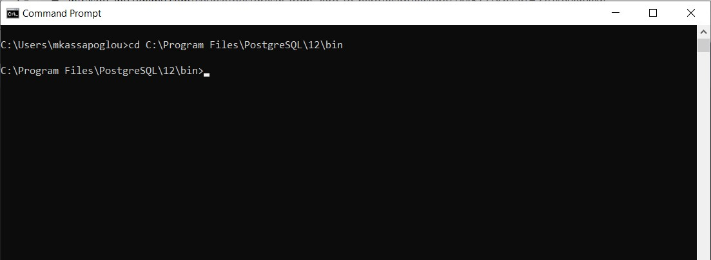Για να ενωθούμε στη βάση έχουμε δύο τρόπους μέσα από το command line. Ο πρώτος είναι ο αναλυτικός και ο δεύτερος ο σύντομος.
Ο αναλυτικός τρόπος για να ενωθούμε στην βάση Northwind από το command line είναι ο εξής:
psql --port=5432 --host=localhost --dbname=Northwind --username=postgres
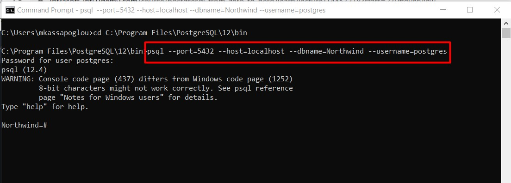Ενώ ο πιο σύντομος συντακτικά τρόπος είναι ο εξής:
psql -p 5432 -h locahost -d Northwind -U postgres
Υπάρχει όμως και ακόμα πιο εύκολος τρόπος. Αν πάμε στο start menu των Windows και ανοίξουμε την κατηγορία PostgreSQL θα δούμε ότι έχει εγκατασταθεί ήδη ένα SQL Shell που εκτελεί την psql εντολή αυτόματα. Αυτό που πρέπει να εισάγουμε είναι κάποια συγκεκριμένα στοιχεία όπως την δικτυακή τοποθεσία της βάσης , τον χρήστη με τον οποίο θέλουμε να ενωθούμε κτλ.
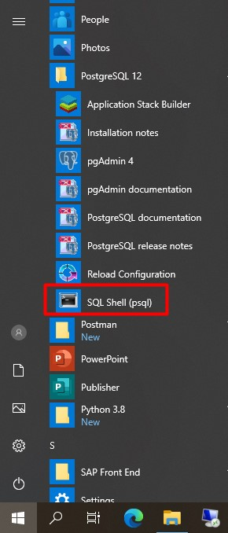Όταν τρέξουμε το πρόγραμμα, πρώτα θα μας ζητηθεί να ορίσουμε που βρίσκεται η βάση. Στο δικό μας παράδειγμα είναι localhost. Μετά ακολουθεί το όνομα της βάσης το οποίο στο παράδειγμα μας είναι Northwind. Η πόρτα, εφόσον δεν την έχετε αλλάξει, είναι η 5432. Το όνομα του χρήστη όπως και το password στο δικό μας παράδειγμα είναι και τα δύο postgres.
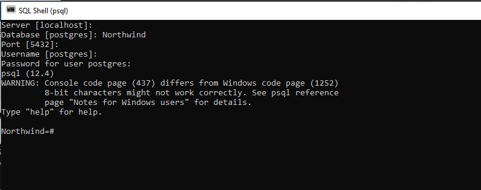Τώρα που έχουμε ενωθεί στην βάση μπορούμε να εκτελέσουμε τα ίδια ακριβώς Queries όπως τα τρέχαμε μέσα από το γραφικό περιβάλλον του pgAdmin4.
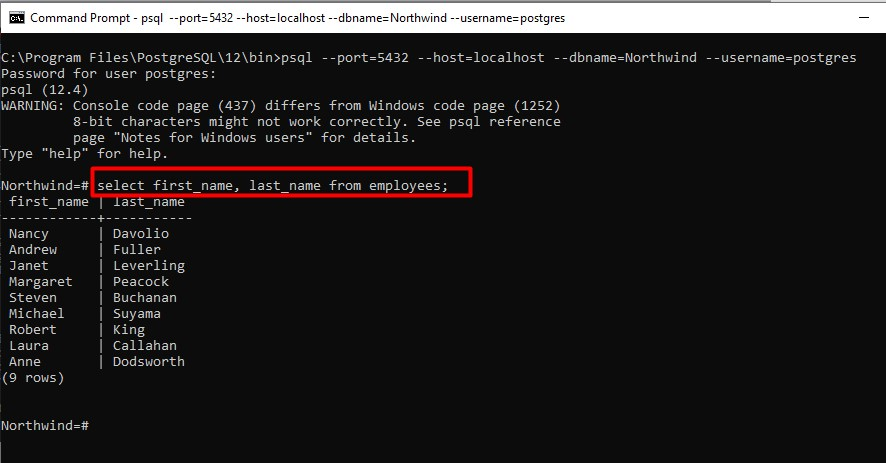Θα πρέπει να ανοίξετε το παράθυρο λίγο περισσότερο αν έχετε μεγαλύτερη οθόνη έτσι ώστε το αποτέλεσμα να φαίνεται περισσότερο οργανωμένο. Αν θέλετε τώρα να εγκαταλείψετε αυτό το ειδικό terminal, δεν έχετε παρά να γράψετε \q
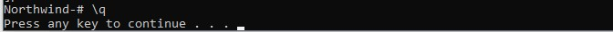Όσο χρήσιμος και αν φαίνεται αυτός ο τρόπος, ειδικά σε περιβάλλοντα Unix, περιλαμβάνει πληροφορίες που πρέπει να επαναλαμβάνουμε και να γράφουμε κάθε φορά που ενεργοποιούμε μια ένωση στη βάση μέσα από το command prompt. Για να αποφύγουμε λοιπόν αυτή την διαδικασία μπορούμε να χρησιμοποιήσουμε δύο διαφορετικούς τρόπους. Ο πρώτος τρόπος είναι να ορίσουμε Environment variables και ο δεύτερος να χρησιμοποιήσουμε ένα αρχείο σαν service file. Πάμε όμως να τα δούμε ένα προς ένα.
Για να ορίσουμε τα στοιχεία που χρειάζονται για να ενωθούμε στη βάση, μπορούμε να χρησιμοποιήσουμε Environment Variables. Αυτές είναι συγκεκριμένες λέξεις που γράφονται με κεφαλαία γράμματα και είναι οι εξής:
PGHOST
PGPORT
PGUSER
PGPASSWORD
PGDATABASE
Για να μπορέσουμε να τα περάσουμε αυτά τα στοιχεία μόνιμα στον υπολογιστή μας, θα πρέπει να δηλώσουμε στα Windows τα Environment Variables. Ανοίγουμε λοιπόν το System Properties στα Windows και πατάμε το Environment Variables κουμπί.
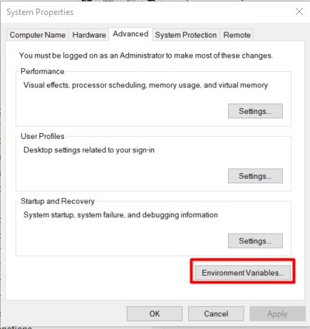Τώρα θέλουμε να δημιουργήσουμε αυτές τις μεταβλητές. Οπότε πατάμε στο New κουμπί κάτω από το User Variables.
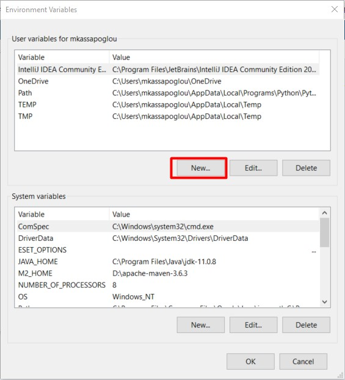Ορίζουμε λοιπόν μια προς μια όλες τις μεταβλητές με αυτό το τρόπο έτσι ώστε να αναγνωρίζονται επίσημα από τα Windows.
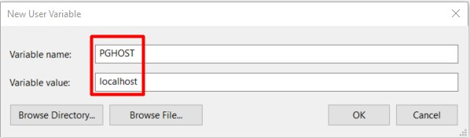 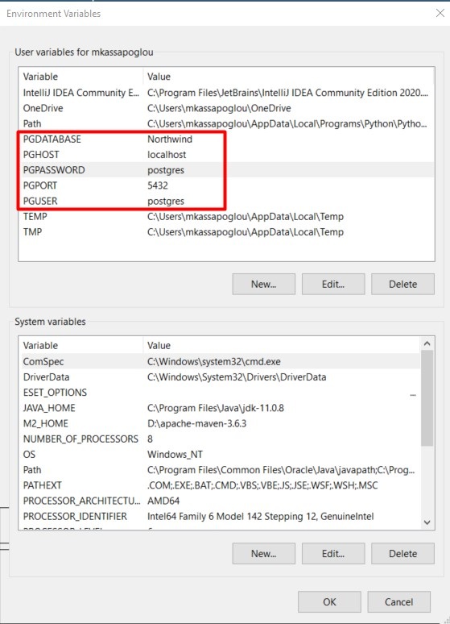Αν τώρα πάμε στο directory όπου βρίσκεται το psql utility και το εκτελέσουμε, θα δούμε ότι ενωνόμαστε απευθείας στην Northwind βάση.
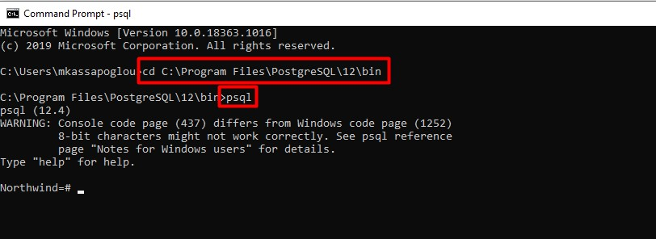Τώρα αν θέλουμε αντί για ένα σταθερό configuration να έχουμε πολλαπλά configurations τότε η λύση με τις Environmental Variables δεν θα μας βοηθήσει και τόσο. Για να προσεγγίσουμε ένα τέτοιο πρόβλημα πρέπει για αρχή να δημιουργήσουμε ένα αρχείο με το όνομα pg_service.conf. Μέσα σε αυτό το αρχείο ορίζουμε τα στοιχεία που έχει κάθε ένωση. Στην ομάδα των στοιχείων δίνουμε ένα όνομα. Για παράδειγμα:
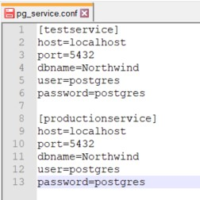Το αρχείο θα πρέπει να το σώσουμε με Unix format. Για αυτή την διαδικασία καλό θα ήταν να χρησιμοποιήσετε το Notepad++. Πηγαίνετε Edit -> EOL Conversion -> Unix (LF).
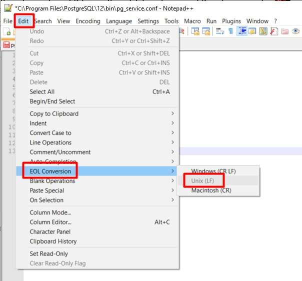Κάνουμε Save το αρχείο.
Τώρα πρέπει να προσθέσουμε στα Environment Variables των Windows την τοποθεσία του αρχείου. Αυτό γίνεται προσθέτοντας δύο μεταβλητές: PGSERVICEFILE και PGSYSCONFDIR. Το δικό μου αρχείο το έχω σώσει εκεί που βρίσκεται και το psql utility.
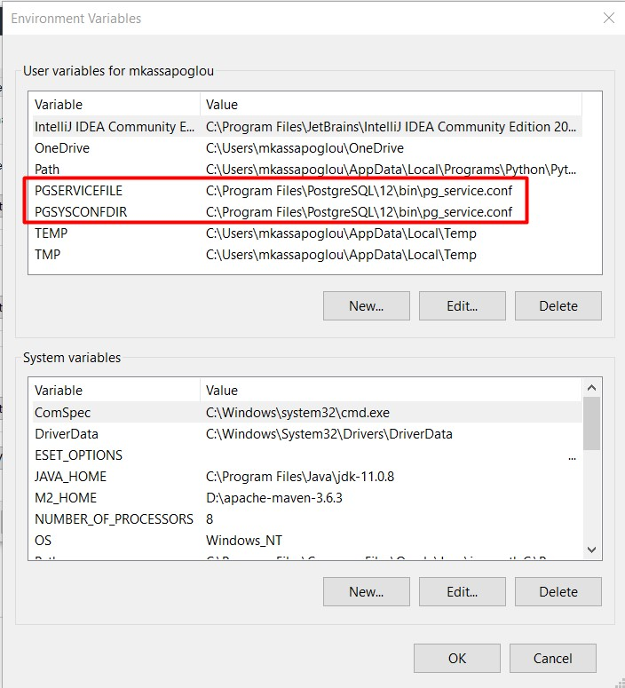Τώρα είμαστε έτοιμοι να επιλέξουμε ποιο από τα δύο configuration θέλουμε να ενεργοποιήσουμε για την ένωσή μας στην βάση. Σε αυτό το σημείο θα πρέπει να κάνουμε Restart τα windows για να βεβαιωθούμε ότι έχουν ενεργοποιηθεί οι καινούργιες μεταβλητές που προσθέσαμε.
Ανοίγουμε λοιπόν ένα cmd terminal και πηγαίνουμε στο path όπου βρίσκεται το psql utility. Γράφουμε μετά την εντολή psql service=testservice για να καλέσουμε το πρώτο configuration από το αρχείο ή productionservice για να καλέσουμε το δεύτερο configuration.
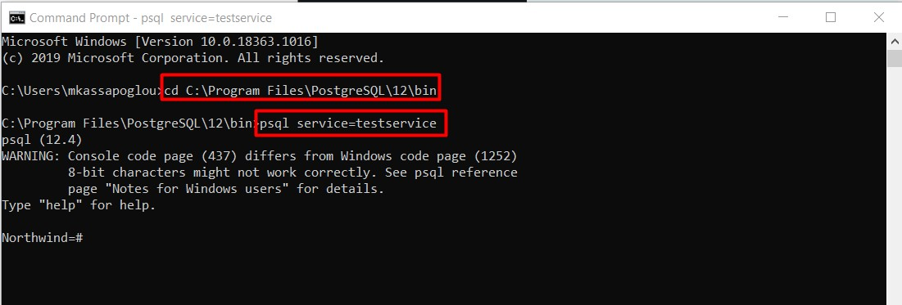Πριν κλείσουμε ας δούμε μερικές ακόμα χρήσιμες εντολές που μπορούμε να τρέξουμε μέσα από το psql περιβάλλον της PostgreSQL. Ας υποθέσουμε λοιπόν ότι έχουμε ενωθεί ήδη στην βάση Northwind με έναν από τους πολλαπλούς τρόπους που μόλις εξηγήσαμε. Θα επιθυμούσαμε όμως να είχαμε μια εικόνα τι άλλες βάσεις υπάρχουν στον PostgreSQL Server που έχουμε εγκαταστήσει. Για να δούμε αυτή την πληροφορία γράφουμε την εξής εντολή:
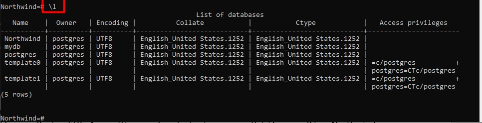Για να καθαρίσουμε την οθόνη μας, μπορούμε να γράψουμε την εξής εντολή:

Για να αλλάξουμε από την Northwind σε κάποια άλλη βάση που ίσως έχουμε εγκαταστήσει τότε γράφουμε \c και το όνομα της βάσης.
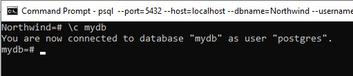Για να δούμε όλα τα schemas που υπάρχουν σε μια συγκεκριμένη βάση εκτελούμε την εξής εντολή:
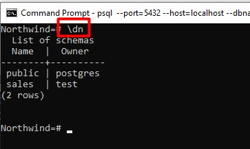Αν θέλουμε να δούμε τους πίνακες που ανήκουν σε ένα συγκεκριμένο schema τότε γράφουμε την εξής εντολή (χρειάζεται και η τελεία για να εκτελεστεί σωστά η εντολή):
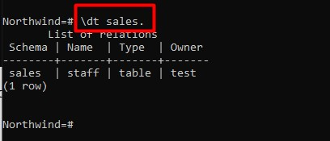